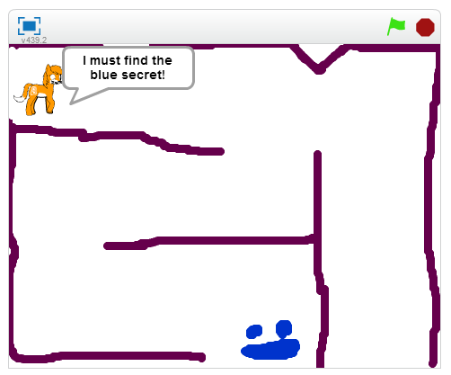

Scratch games
August 31, 2015
Scratch is a beginner programming tool made by MIT. I’ve taught over 40 Scratch workshops for Auckland Libraries, OMG Tech, and FutureInTech.

Here are some games made by our students:
Here are some of my own games: